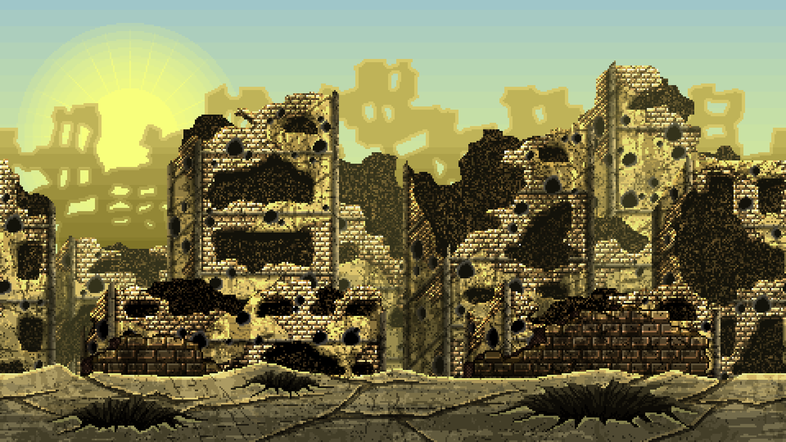
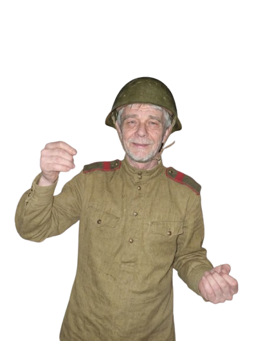
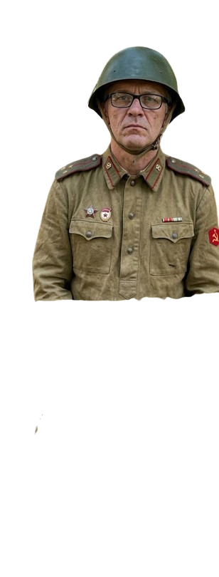
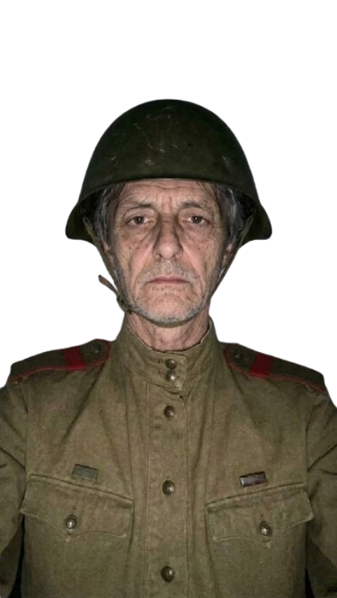
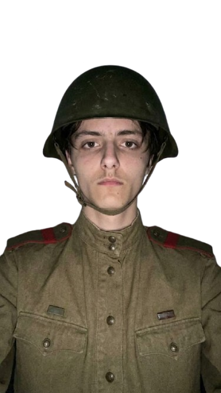
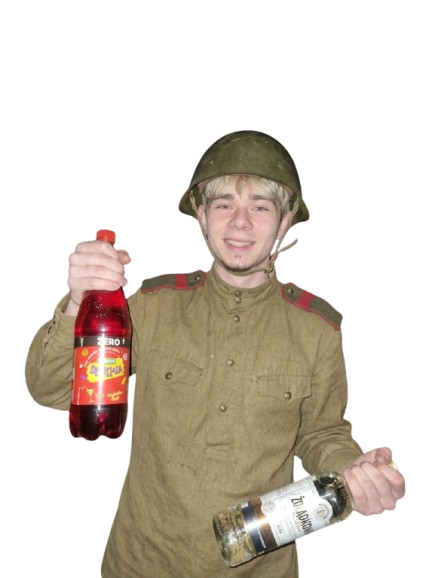

Karol Marciniak

Łączniczka Helena

Saper „Stalowy”

Porucznik „Kruk” (Snajper)

Sanitariuszka „Kalina”

Kolejarz Andrij [PL/UA]
Wartownik NKWD

Komisarz Woronow (NKWD)

Kpt. Morozow (Pancerniak NKWD)

Oficer Łysy (NKWD)

Paser Wasyl (Szmugler nad Dnieprem)
Oficer Przemo (NKWD)
